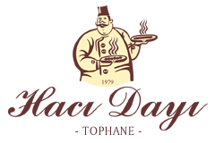

YAPIM
AŞAMASINDA
Yenileniyoruz — Sizlere daha iyi hizmet verebilmek için web sitemizi güncelliyoruz.
FİRMA UNVANI
ÖZ URFALI HACI DAYI Gıda ve Turizm İşletme Ltd. Şti.
TOPHANE RESTAURANT TELEFONLAR
ADRES
TOPHANE BAHÇE İÇİ NO:25
Osmangazi / BURSA
INSTAGRAM
@hacidayitophane
instagram.com/hacidayitophane
Osmangazi / BURSA